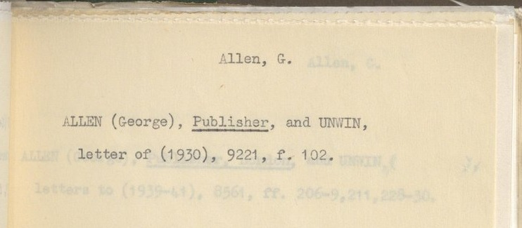

Each model must return a completed record from a card image and JSON schema.
98 index cards · 12 models
Cards from the National Library of Scotland's manuscript catalogue, NationalLibraryOfScotland/index-cards-eval (CC0). Labels drafted by Qwen3.6-35B-A3B, checked by NLS cataloguers: 66 accepted as drafted, 32 corrected.
Risk is a wrong identifier or an invented field: silent, because nothing in the record flags it. Workload is a visible blank field someone must fill. Fields right is overall F1; resampling the 98 cards moves a score by up to ±3 points, so neighbouring rows are not separated here.
| Risk · silent errors | Workload · visible gaps | |||
|---|---|---|---|---|
| Model | Identifiers wrong | Invented fields | Fields left blank | Fields right |
| Qwen/Qwen3-VL-235B-A22B-Instruct 235B (22B act) | 6.1% | 22.8% | 1.6% | 88.9 |
| Qwen/Qwen3.8-27B 27.8B | 7.3% | 4.0% | 8.7% | 85.5 |
| Qwen/Qwen3.6-27B 27B | 7.9% | 5.8% | 3.9% | 89.4 |
| Qwen/Qwen3.5-9B 9B | 8.9% | 21.3% | 2.4% | 84.1 |
| google/gemma-4-26B-A4B-it 26B (4B act) | 10.0% | 18.8% | 15.2% | 79.3 |
| numind/NuExtract3 4B | 10.8% | 17.7% | 4.3% | 85.4 |
| datalab-to/lift 9B | 10.9% | 25.0% | 3.0% | 86.2 |
| google/gemma-4-31B-it 31B | 15.2% | 22.0% | 4.1% | 85.4 |
| meta-llama/Llama-4-Scout-17B-16E-Instruct 109B (17B act) | 17.9% | 14.6% | 8.8% | 83.5 |
| google/gemma-3-4b-it 4B99% parsed | 70.9% | 15.0% | 27.1% | 61.4 |
| swiss-ai/Apertus-v1.5-8B 8.9B98% parsed | 88.2% | 0.5% | 40.0% | 63.5 |
| LiquidAI/LFM2.5-VL-1.6B-Extract 1.6B88% parsed | n/a | 67.1% | 53.6% | 30.6 |
| constants baseline reads nothing | 97.8% | 7.3% | 29.3% | 59.3 |
A hollow point wrote no identifiers to get wrong. Read its workload figure instead. A triangle exceeds the scale; its label gives the value. The grey point is the constants baseline: it reads nothing and gives every card the most common value for each field. Its score is the floor. Hover for exact figures.
google/gemma-4-31B-it on card Allan-W.-Anderson-D.__0221 — a label National Library of Scotland cataloguers accepted unchanged. The model catalogued a second, fainter line below the main entry: show-through from the card behind.

| field | human-checked record | model output | scored as |
|---|---|---|---|
| image_type | index_card | index_card | right |
| heading | ALLEN (George) | Allen, G. | part marks · 0.74 |
| heading_type | person | person | right |
| epithet | Publisher, and UNWIN, | — | left blank |
| cross_reference | — | — | |
| cross_reference_text | — | — | |
| has_corrections | false | false | right |
| continues_onto_next | false | false | right |
| continued_from_previous | false | false | right |
| entries[0].ms_no | 9221 | 9221 | right |
| entries[0].folios | f. 102 | 102 | wrong |
| entries[0].description | letter of (1930) | ALLEN (George), Publisher, and UNWIN, letter of (1930) | part marks · 0.46 |
| entries[1].ms_no | — | 8561 | invented |
| entries[1].folios | — | 206-9, 211, 228-30 | invented |
| entries[1].description | — | letters to (1939-41) | invented |
| notes | The faint text below the main entry (letters to (1939-41), 8561...) is show-through from the card behind and is ignored. | — | not scored |
1 left blank is workload: the model omitted the card's epithet, leaving a visibly empty field. 3 invented and 1 wrong are risk: entry 1 copies a whole manuscript entry — number, folios, description — from the card behind, without marking it as doubtful. 102 for f. 102 has the right number but the wrong form. Identifiers get no half marks, so it scores wrong. notes is the reviewer's labelling commentary. No model can produce it, so it is excluded from every number on this page.
| Model | identifiers & flags F1 | free-text F1 | precision | recall | verified (66) | corrected (32) | identifier-clean cards | parsed |
|---|---|---|---|---|---|---|---|---|
| Qwen/Qwen3-VL-235B-A22B-Instruct | 92.9 | 79.9 | 88.3 | 90.5 | 90.5 | 85.7 | 83 | 100% |
| Qwen/Qwen3.8-27B | 93.9 | 63.6 | 89.4 | 82.1 | 87.2 | 81.8 | 77 | 100% |
| Qwen/Qwen3.6-27B | 94.9 | 76.2 | 90.8 | 88.2 | 90.7 | 86.7 | 78 | 100% |
| Qwen/Qwen3.5-9B | 89.4 | 71.9 | 83.6 | 85.1 | 87.1 | 77.8 | 75 | 100% |
| google/gemma-4-26B-A4B-it | 87.9 | 57.7 | 83.9 | 76.7 | 82.6 | 72.6 | 71 | 100% |
| numind/NuExtract3 | 91.6 | 71.9 | 86.0 | 85.4 | 86.3 | 83.4 | 73 | 100% |
| datalab-to/lift | 90.7 | 75.3 | 85.7 | 87.3 | 87.4 | 83.6 | 73 | 100% |
| google/gemma-4-31B-it | 90.7 | 72.9 | 85.6 | 86.0 | 87.0 | 82.0 | 70 | 100% |
| meta-llama/Llama-4-Scout-17B-16E-Instruct | 88.6 | 71.2 | 86.5 | 81.7 | 85.2 | 79.9 | 59 | 100% |
| google/gemma-3-4b-it | 67.4 | 46.7 | 69.0 | 56.3 | 65.2 | 53.6 | 22 | 99% |
| swiss-ai/Apertus-v1.5-8B | 73.5 | 35.5 | 81.4 | 52.5 | 67.3 | 55.5 | 9 | 98% |
| LiquidAI/LFM2.5-VL-1.6B-Extract | 40.1 | 15.3 | 38.0 | 26.9 | 31.5 | 28.8 | 9 | 88% |
| constants baseline | 68.7 | 36.6 | 69.3 | 52.7 | 62.4 | 52.9 | 9 | 100% |
Identifiers & flags use exact matching (manuscript numbers, folios, fixed categories and true/false values); free-text uses character closeness. verified (66 cards): labels reviewers accepted as drafted; corrected (32): labels reviewers edited. The drafts came from Qwen3.6-35B-A3B, so the subsets are reported separately. The split does not establish whether its relatives benefit. Identifiers wrong is counted over the identifiers the card has that the model filled in; one added where the card has none counts as invented, one left blank as workload. Identifier-clean cards: every manuscript number and folio reference in the gold record was returned exactly right. Cards with no identifiers count as clean for every model. Parsed: share of the 98 outputs usable as JSON; the rest scored zero.
Gold set: NationalLibraryOfScotland/index-cards-eval (CC0) — index cards from the National Library of Scotland's manuscript catalogue; labels drafted by Qwen3.6-35B-A3B and checked by NLS cataloguers (66 accepted as drafted, 32 corrected). Every model received the same card image and JSON Schema; the same scorer evaluated all outputs. The three main-table rate columns are micro-averaged over all 98 cards. Fields right and the breakdown are per-card means, except identifier-clean cards, which is a count; verified/corrected F1 uses the corresponding subset. Code and result files: github.com/davanstrien/glam-extraction-benchmark